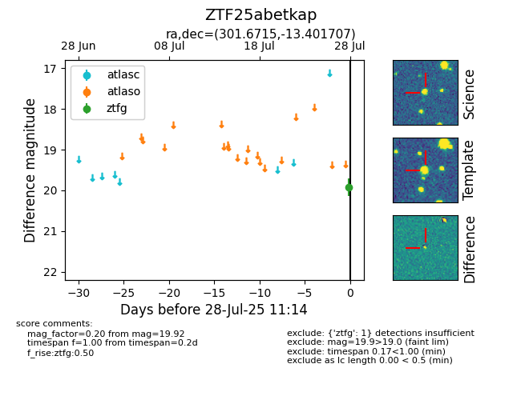

Target ZTF25abetkap at 2025-07-28 11:14, see:
FINK: fink-portal.org/ZTF25abetkap
Lasair: lasair-ztf.lsst.ac.uk/objects/ZTF25abetkap
ALeRCE: alerce.online/object/ZTF25abetkap
alt names
ZTF25abetkap (ztf,fink)
coordinates:
equatorial (ra, dec) = (301.6715,-13.40171)
galactic (l, b) = (29.0028,-22.63509)
photometry
last ztfg=19.92
1 ztfg detections
